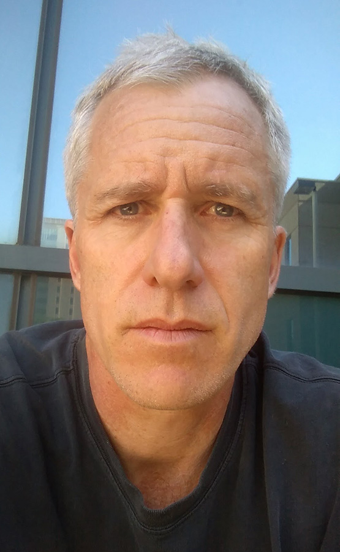

Welcome to Bill Perry’s Research Lab
Graduate Student Applications: I am not currently taking graduate students until Fall 2026.

Research Overview
Our laboratory focuses on two interconnected areas of freshwater ecology research that address critical environmental challenges facing aquatic ecosystems today.
1. Biogeochemistry of Freshwater Systems
We investigate the complex chemical and biological processes that govern water quality in streams, lakes, and tile-drained agricultural landscapes. Our current research includes:
- Watershed Management & Water Quality: Assessing how land management practices influence downstream water chemistry and ecosystem health
- Constructed Wetland Performance: Evaluating the effectiveness of engineered wetlands for nitrate removal from agricultural runoff
- Cover Crop Efficacy: Quantifying how cover crops reduce nutrient losses from agricultural fields
- Reservoir Water Quality Monitoring: Long-term monitoring of water quality in streams feeding drinking water reservoirs
2. Crayfish Ecology & Invasion Biology
Our crayfish research examines how native and invasive species interact with their environment and each other:
- Stream Invasion Dynamics: Understanding how invasive crayfish species colonize and establish in new watersheds
- Flow Performance & Behavior: Investigating how water flow affects crayfish movement, feeding, and survival
- Morphological Adaptations: Documenting physical changes in crayfish populations in response to different flow regimes
- Community Impacts: Assessing how invasive crayfish affect native species and ecosystem function
Current Primary Project
Innovative Cover Crop Research
We are conducting cutting-edge research on the role of cover crops in reducing nutrient loss using a new experimental plot system featuring a novel cash cover crop approach. This comprehensive study examines multiple interconnected aspects:
Soil & Water Quality - Soil nutrient content and quality assessments - Porewater nitrogen concentration monitoring with and without cover crops - Tile water nutrient loss quantification
Ecological Interactions
- Weed species diversity and biomass comparisons between cover crop and reference plots - Honeybee utilization patterns of cover crop flowers - Plant-pollinator interaction networks
Agricultural Sustainability - Economic viability of cash cover crops - Integration with existing farming practices - Long-term sustainability assessments
Laboratory Facilities
Our research is supported by state-of-the-art facilities including water chemistry analysis equipment, greenhouse spaces for controlled experiments, and field monitoring stations throughout the Lake Superior region and upper Midwest watersheds.
Collaborations
We work closely with: - The Nature Conservancy on watershed management initiatives
- Minnesota Pollution Control Agency - Local farmers and agricultural organizations - Other University of Minnesota departments and research centers
This website is currently being updated with new research findings and project developments. Check back regularly for the latest information about our ongoing work.